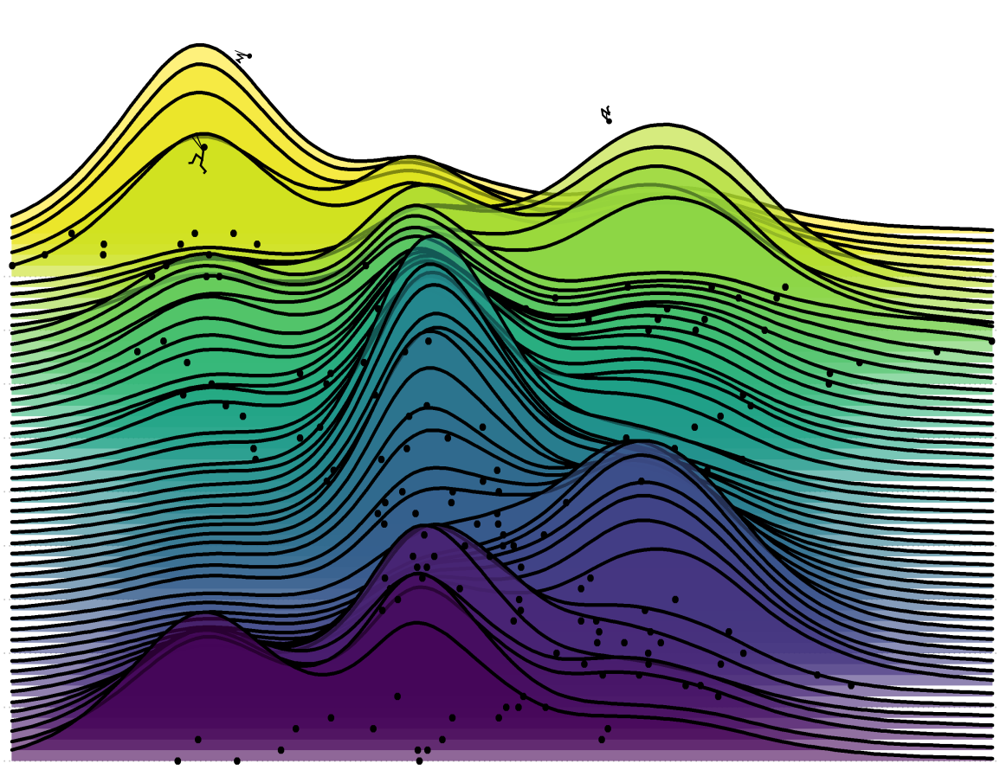

Non Academic Interests
In addition to mathematics I also love sports and art. I practiced diving when I was younger and proudly represented Mexico and UNAM in international competitions. Now I practice parkour, climbing and I recently started rollerskating. My other hobbies are art related, I enjoy painting and playing piano very much. To know more about my non academic interests your can follow me on instagram.
